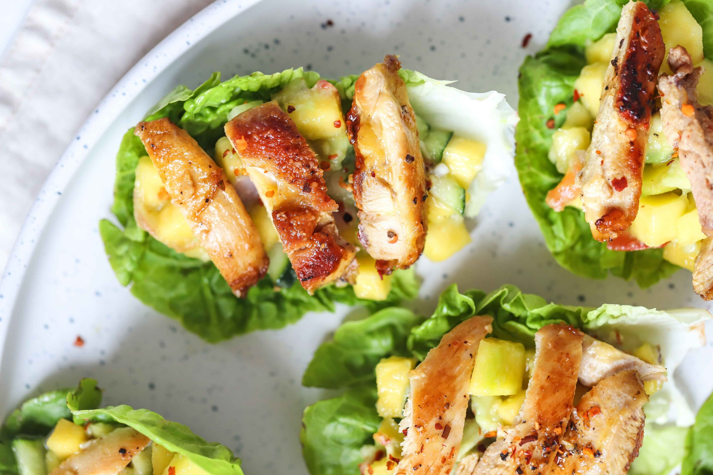

Quesadilla de queso

Realmente te vas a hacer esto?
Seguro que quieres continuar? No prefieres comerte la bola de queso?
ingredientes
- Lechuga
- Pollo o alguna otra proteina que tengas por ahi
- Perder el control de tu vida
Instrucciones
- Colocar la lechuga en un lugar plano
- Colocar la carne o lo que tengas enmedio
- doblarla
- Mirarla y dejar que tus pensamientos divagen, pensar en cada momento que te ha llevado a este punto. Que decisiones, que demonios personales te han llevado
a hacer tal afrenta? estan tus ancestros llorando en este momento?
- Disfruta 😊